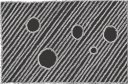

ThingsPool
Home
Our Games
Sarsen Adventure
FirePool
Game_3
Game_4
Other Works
Writings
Characters
Contact Us
게임 "호버!"(Hover!)를 통해 보는 물리적 전략시뮬레이션
게임 속에 등장하는 공포의 심리학
게임 - 사용자의 배경지식을 활용하라
게임분석 - 자유답지 않은 자유
튜링 테스트를 통과하는 게임들
게임분석 - 기술의 제약이 만들어낸 개성
토이스토리 2와 심슨 히트 앤 런의 레벨 디자인이 말해주는 조화의 미
초창기 심즈에 관한 이야기 (심즈의 역사) - 1
초창기 심즈에 관한 이야기 (심즈의 역사) - 2
초창기 심즈에 관한 이야기 (심즈의 역사) - 3
초창기 심즈에 관한 이야기 (심즈의 역사) - 4
초창기 심즈에 관한 이야기 (심즈의 역사) - 5
초창기 심즈에 관한 이야기 (심즈의 역사) - 6
초창기 심즈에 관한 이야기 (심즈의 역사) - 7
게임 속 신비주의
방치형 게임을 통해 보는 게임정신의 종말 - 1
방치형 게임을 통해 보는 게임정신의 종말 - 2
재미의 근본
전략적 다양성
대한민국 심즈 커뮤니티의 역사 - 1
대한민국 심즈 커뮤니티의 역사 - 2
대한민국 심즈 커뮤니티의 역사 - 3
대한민국 심즈 커뮤니티의 역사 - 4
대한민국 심즈 커뮤니티의 역사 - 5
대한민국 심즈 커뮤니티의 역사 - 6 (월드심즈, 쿠킵의 심즈카페)
대한민국 심즈 커뮤니티의 역사 - 7 (월드심즈, 쿠킵의 심즈카페)
대한민국 심즈 커뮤니티의 역사 - 8 (월드심즈, 쿠킵의 심즈카페)
대한민국 심즈 커뮤니티의 역사 - 9 (월드심즈, 쿠킵의 심즈카페)
대한민국 심즈 커뮤니티의 역사 - 10 (월드심즈, 쿠킵의 심즈카페)
대한민국 심즈 커뮤니티의 역사 - 11 (에필로그)
대한민국 심즈 커뮤니티의 역사 - 12 (에필로그)
게임의 완성은 유저가 한다
도구로서의 게임
컨트롤은 어떻게 디자인 하는가?
미래의 사람들은 어떤 게임을 할까? - 1
미래의 사람들은 어떤 게임을 할까? - 2
서버 중심의 게임플레이
분산형 컴퓨팅에 관한 기대
게임과 브랜드 사이의 상관관계
게임 속의 일반화
마이너한 게임이 살아남는 방법
기계에게는 적당한 멍청함이 필요하다
억눌린 감정들에 대한 정신분석
게임 속의 모든 것은 화폐로 이루어져 있다
눈속임의 미학
에듀테인먼트
멀티플레이어 게임의 장점들 - 1
멀티플레이어 게임의 장점들 - 2
멀티플레이어 게임의 장점들 - 3
게임 속 소유욕 - 1
© 2019 ThingsPool. All rights reserved.